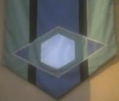

Enara Prime |
|
||||
|  |
| Classe | M |
| Specie senziente | Enarano |
Pianeta d'origine degli Enarani, situato
nel quadrante Delta.
Le montagne di Deleus e il mare di ghiaccio sono due delle maggiori attrattive
del pianeta. Nella piazza principale della capitale c'è una porta che ricorda
l'autodistruzione dei Reazionari e serve a monito per le future generazioni a
non essere testardi e retrogradi come loro.